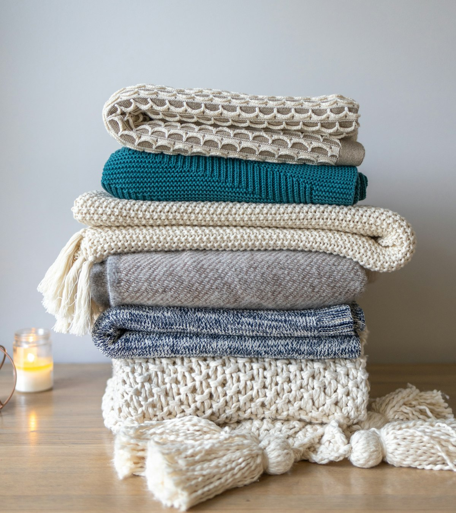

Short answer: The right size depends on how many people are in the picture and where the blanket will be used. A 30x40 inch size suits a couple or a single portrait on a couch, a 50x60 inch blanket fits most family group photos as a throw, and a 60x80 inch size works as wall art for large group shots. Match the photo aspect ratio to the blanket so no faces get cropped at the edges.
Bottom line: Order the 50x60 for a standard family photo, the 30x40 for a single subject, and the 60x80 only when you have the wall space and the resolution to fill it.
Start with the photo, not the blanket
It is tempting to pick a size first, but the picture should drive the decision. A sharp phone shot of two people printed large looks better than a blurry group blown up to fill a wall. Look at how many faces are in the frame, how much empty space sits around them, and whether the moment is a tight portrait or a wide gathering before you commit to a dimension.
Once you know the photo, the size almost chooses itself. Small subjects want the smaller blanket where they stay large in the print, and big gatherings need the wider format so nobody gets cut. The rest of this guide walks through ratios, the three common sizes, and where each one looks best in a real home.
One more thing before you size: think about who receives it. A blanket meant for a grandparent should favor the larger, clearer print so faces read from across a room, while a teen might prefer the smaller size they can actually use. The recipient, not the photo alone, should have a say in the final dimension, because a gift that fits the life gets kept. When in doubt, ask which room the blanket will live in and size from there, since a throw that matches the space is the one that stays out instead of being folded away.
How aspect ratio changes the crop
Aspect ratio is the width-to-height relationship of the image, and it decides how much of your photo survives the print. A standard phone photo is close to a 3x4 shape, while a 50x60 blanket is closer to 5x6. The mismatch is small, but a wide panoramic shot on a square format forces heavy cropping that drops people from the edges.
Always check the preview before you pay. Leave a little headroom above and below the group, and avoid filling the frame edge to edge, because the blanket edge sits a centimeter or two inside the printed area. The photo layout tool lets you drag the image and confirm the borders, which saves a reorder on a cropped forehead or a missing cousin.
30x40 vs 50x60 vs 60x80
These three sizes cover almost every family situation. The 30x40 is a lap or nursery size that shows one or two people clearly. The 50x60 is the everyday throw that fits a family of three to six as a bed end or couch cover. The 60x80 is a statement piece meant to hang, not fold, because it is heavy and awkward to store once rolled.
If you are unsure, the 50x60 is the safe default. It prints well from a normal phone photo, it is easy to gift, and it works on a couch or a bed without looking oversized. Reach for the 60x80 only when the group is large and the wall is empty, and keep the 30x40 for single-subject gifts and small chairs.
| Size | Best photo | Where it works |
|---|---|---|
| 30x40 inch | One or two people, single portrait | Couch throw, nursery chair, small shelf |
| 50x60 inch | Family of three to six, group shot | Living room throw, bed end, reading nook |
| 60x80 inch | Large extended-family group, wide shot | Wall hanging, sofa backdrop, studio display |
Wall display versus couch use
A blanket on a couch gets used, washed, and loved, which is exactly what most families want from a gift. The 30x40 and 50x60 sizes read well as throws because they are light enough to fold and soft enough to actually wrap up in. Daily use is the strongest reason to pick the smaller formats for most households.
A 60x80 is better treated as art. Hang it on a rod or frame it lightly so the print stays flat, because folding a blanket that large leaves a crease across the faces. If your goal is a display piece for the living room wall, go large and hang it; if your goal is a gift people cuddle with, stay at 50x60 or below.
A plain way to settle the question is to ask who will see it most. A throw on the family couch gets used by everyone and worn soft by the week, while a hung blanket is admired and left alone. Both are valid gifts, and the right size follows the role you pick, so decide the job before you decide the dimension.
Resolution the photo needs
Print size and file size move together. A small blanket hides a soft photo, but a wall-size print shows every blur, so the file has to grow with the dimension. Send the original image from the phone or camera, never a compressed version forwarded through a chat app, because those are shrunk and sharpened in ways that show as blocks on fabric.
As a rule, the long edge should clear two thousand pixels for a 50x60 and three thousand for a 60x80. If your only copy is a small file, step down a size rather than enlarge and hope. The checklist below is the quick test we run before any family photo goes to press.
- Aim for at least 1500 pixels on the short edge for a 30x40 print
- Use 2000 pixels or more for a 50x60 blanket to keep faces sharp
- Supply 3000 pixels for a 60x80 wall piece before enlarging
- Shoot in good daylight and avoid heavy zoom that hides noise
- Send the original file, not a compressed message-app version
Ordering and proofing the print
When you order, the preview is your last chance to catch a crop or a tilt, so take a minute with it instead of clicking through. The custom blankets page shows the available sizes and the fabric options, and the blanket size buying guide compares price per size if budget is part of the call. Proof the photo at full zoom before you pay.
For a group shot, ask everyone to send their favorite version and pick the one with the best light and the fewest closed eyes, because no size fixes a bad original. Once printed, a family photo throw tends to become the one everyone fights over on the couch, which is the best sign you sized it right.
Ordering more than one blanket
Families rarely want just one. A 50x60 throw for the parents and a 30x40 for each grandparent is a common order, and printing from the same photo keeps the set consistent. When you order multiples, upload the file once and apply it to each size in the cart, then proof every size separately because the crop shifts as the blanket gets smaller and faces that fit on the large one can crowd on the small one.
Shipping several blankets to one address is easy, but shipping to a spread of relatives needs the same address discipline as any gift run. Confirm each recipient's details before you order, because a returned parcel to a grandparent across the country is a harder fix than a typo on your own doorstep. The bulk order tool handles mixed sizes to different addresses in a single checkout when the family is large.
Price per unit drops as the count rises, so a set of three or four often costs less per blanket than a lone order, and that is worth knowing before you promise the whole extended family. Check the custom blankets page for the current size pricing, and remember that the 30x40 is the cheapest to ship because it folds small. A matched set printed from one photo makes a stronger gift than four different rushed buys made at the last minute.
If the photo is a scan of an old print, clean it first. Dust and creases on the original show on fabric just as they show on paper, and a quick pass with a soft cloth and good light saves a disappointed print. The photo layout tool accepts the cleaned file the same way, and a little prep on the source is the difference between an heirloom and a smudge that gets noticed every time the couch is folded.
Frequently Asked Questions
What size photo blanket is best for a family of four?
A 50x60 inch blanket is the safe choice for a family of three to six. It is large enough to show faces clearly when laid over a couch or bed, and it prints well from a phone photo with decent light. The 30x40 size works only if you crop to two people, and the 60x80 is worth it mainly for wall display rather than daily use.
Will a phone photo look good on a 60x80 blanket?
Only if the file is sharp and large. A 60x80 print is big, so any blur shows. Send the original image, not a compressed chat version, and aim for around 3000 pixels on the long edge. If the photo is soft or low light, step down to a 50x60 where the same file looks noticeably cleaner on the fabric.
How do I avoid cropping faces on the blanket?
Match the photo aspect ratio to the blanket. A 50x60 blanket is close to a 5x6 ratio, so a standard phone photo needs only light cropping. Use the layout preview before ordering and leave headroom at the top and bottom. The photo layout tool lets you drag the image and check the edges before you pay for the print.
Is a photo blanket better on a wall or a couch?
It depends on the size and your room. A 30x40 or 50x60 reads well as a couch or bed throw that people actually use, while a 60x80 is better framed and hung because it is heavy and awkward to fold. If you want daily use, pick the smaller size; if you want display, go large and hang it on a rod.
Can I print a wide group photo on a square blanket?
Not well. A wide group shot needs a wide blanket, so choose the 60x80 or crop the ends. Printing a panoramic photo on a square size forces heavy cropping that cuts people from the frame. If the group is the point, keep the width and size the blanket to match the original ratio so nobody disappears at the edge.